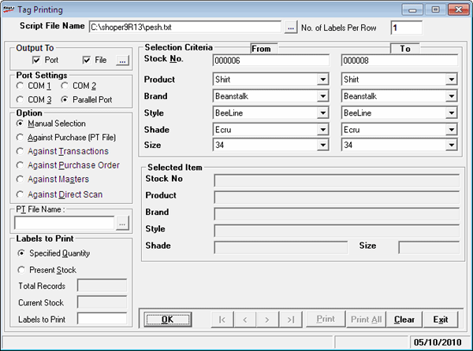

Barcode labels stored in barcode script format can be printed using this option.
How to reach: Stock > Barcode > Print Labels
The Tag Printing window is displayed.

Script File Name: Enter the required Barcode Script File (.blf) name. Alternatively, click  and select the file.
and select the file.
Note: The script file created using barcode designer program of versions earlier to Version 7.2 Rel 3.0 is also supported and the procedure to print is the same.
No. of Labels Per Row: The number of labels allowed per row as defined in the .blf file is displayed.
The fields, Output To and Port Settings are disabled, if the selected script file is a .blf file.
Note: If the selected script file is a .txt file, you need to enter/ select the following:
No. of Labels Per Row: Enter the number of labels allowed per row.
Output To: Select the specific location/s for storing the output file. If you select Port, the Port Settings option will be enabled. If you select File, click  and select the output file.
and select the output file.
Port Settings: To select the port to which the printer is attached.
Option: Select your choice for label printing. The options are:
Click the corresponding link to learn more about each option.